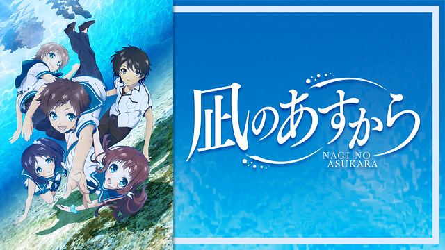

恋愛系
-
あらすじ
キャスト
感想
あらすじ
キャスト
感想
凪のあすから
あらすじ
その昔、人間は皆、海に住んでいた。 でも、陸に憧れた人たちは海を捨てた。 海で暮らせるように海神様がくれた、 特別な羽衣を脱ぎ捨てて……。
海で暮らす人、陸で暮らす人、 住む場所が分かれ、考え方は相容れずとも、 元は同じ人間同士、わずかながらも交流は続き時は流れた。
海底にある海村で暮らす 先島光、向井戸まなか、比良平ちさき、伊佐木要と 地上に暮らす木原紡。
海と陸。 中学二年生という同じ年代を過ごしながら 今まで出会うことのなかった彼らが出会った時、 潮の満ち引きのように彼らの心も揺れ動く。© Project-118/凪のあすから製作委員会
キャスト
先島光：花江夏樹 向井戸まなか：花澤香菜 比良平ちさき：茅野愛衣 伊佐木要：逢坂良太 木原紡：石川界人 潮留美海：小松未可子 久沼さゆ：石原夏織 先島あかり：名塚佳織 先島灯：天田益男 潮留至：間島淳司 木原勇：清川元夢 うろこ様：鳥海浩輔
感想
ちょっと不思議な世界で繰り広げられる少年少女たちの青の御伽話
「凪のあすから」以上に一言で表すことが難しい作品を私は知りません。そのくらい複雑でとても綺麗な恋愛作品です。 何より2クール目からがとても面白く、この作品は2クール目からが本番と思わせるほど世界観に引き込まれます。
そしてこのアニメは当サイトでも青春系で取り上げている「色づく世界の明日から」の監督でもある篠原俊哉監督の作品です。篠原監督の作品はどれも良作なのでおすすめです。